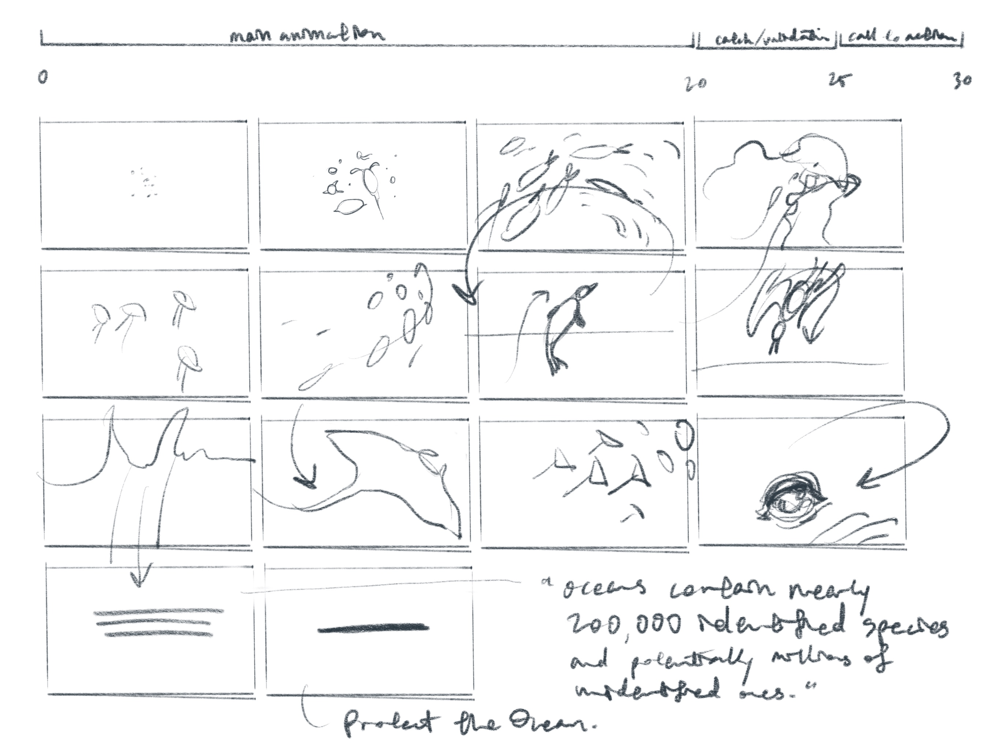
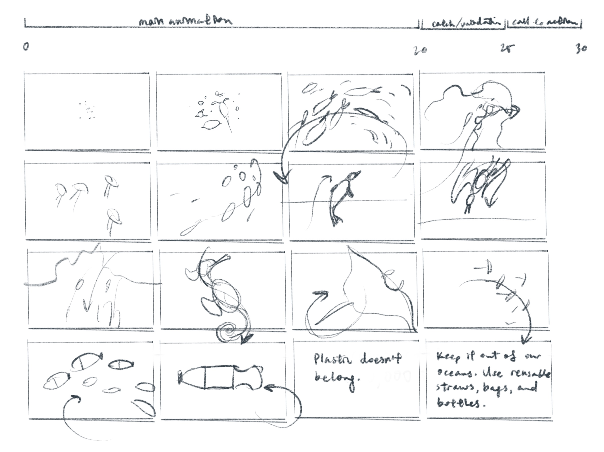
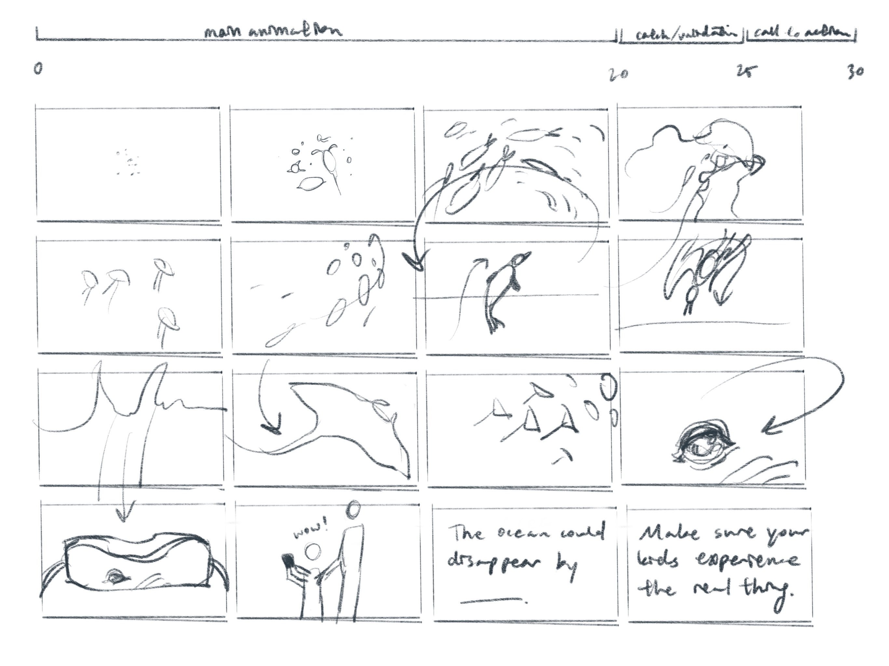
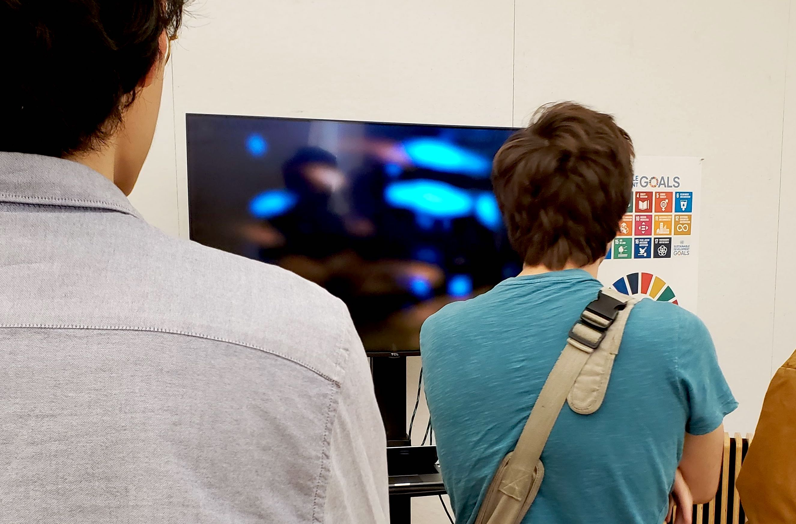

Overview
Research
Moodboard
After looking through all the goals, I decided that I wanted to focus on goal 14: life below water. I've always seen the ocean as magical, and I would hope that future generations get to experience it and the wildlife within it as well. With this in mind, I started gathering inspiration for possible visual directions I could take.


Narrative
Storyboarding
My overall concept at this point was to showcase the beauty of marine life before transitioning into a relevant statistic and call to action. I wanted to achieve the first step with frame-by-frame animation and liquid motion, so I storyboarded that idea, along with different ideas for my ending message.



Narrative
Approach
Though I wanted to try frame-by-frame animation, I had no experience with it and was worried that it'd take too long. While brainstorming the most time-effective methods for creating an animation, I considered using code (p5.js & WEBGL) as a medium, and made a few tests to see if I could mimic an underwater scene. Though the results were promising, I eventually decided not to use code, since I was worried that my general unfamiliarity with WEBGL would make me lag behind.
Narrative
Iteration 1
After getting feedback that my narrative was too literal, I changed my concept to be more emotional. Playing with the idea of showing less, I explored a new visual direction: blurring and colorizing stock footage. This allowed me to work a lot faster than I would've been if I was animating, and also created a unique dream-like aesthetic which worked quite well for my concept. I changed my narrative to a slow fade out of sound and footage, as a metaphor for the extinction of marine species.
!
I had been trying to go for a sepia tone for a vintage, faded, look, but multiple people were confused why the color was "muddy."
Because of this, I decided to include more realistic colors in my next iteration.
Narrative
Iteration 2
Another round of feedback made me realize that my revised concept was probably now too metaphorical and abstract. To make the experience more personal and relatable, I interviewed friends about their favorite memories of the ocean and pieced together a story from it, which I paired with footage.
Refinement
More Iterations
I kept adjusting my narrative and tuned font size and weight, as well as the speed of transtions and effects.
Refinement
Final
I added the music in last, which was a bad choice because I had to adjust the timing for everything again (lesson learned—always choose music first for motion pieces). I don't regret the extra work though—I think adding a soundtrack really help with atmosphere and pacing.
right: my piece being played at our studio's final show

Conclusion
Takeaways
To date, this is probably one of the projects I'm proudest of. Despite having a relatively quick turnaround and changing my concept multiple times, I managed to land on a visual approach and a message that felt impactful. This project was my first in-depth motion project, and it made me appreciate and and want to create more motion design.
During critique, some reviewers commented that the video "felt like a dream," and that it was both beautiful and heartbreaking. I hope that by watching my video, you were also impacted in some way.
Take action: 10 Things You Can Do to Save the Ocean